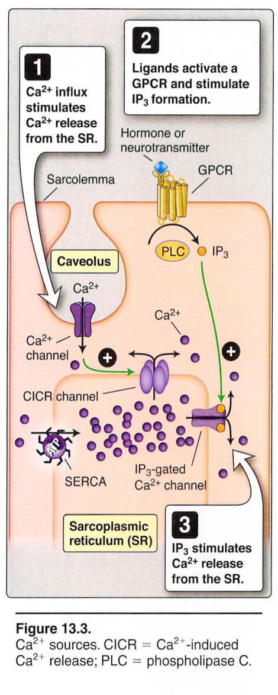

üî¨ C. Membrane Systems
1. Sarcolemma
- NO T-tubules (vs skeletal)
- Caveolae:
• 50-100 nm flask-shaped pockets
• Form 15-30 nm junctions with SR
• Contain lipid rafts - Lipid rafts enriched with:
• GPCRs
• Signaling molecules
• L-type Ca²⁺ channels
2. Sarcoplasmic Reticulum
- Extensive tubular networks
- Ca²⁺ concentration: ~1 mM
- Two Ca²⁺-release channels:
• CICR channels
- Opened by Ca²⁺ influx
- Ca²⁺ sparks visible
• IP₃-gated channels
- GPCR activation
- Hormone/NT response
Figure 13.3. Ca²⁺ Sources

Ca²⁺ signaling pathways showing extracellular influx, CICR, and IP₃-mediated release mechanisms
üîó D. Neuromuscular Junction
Smooth muscle is regulated by the autonomic nervous system (ANS), unlike skeletal muscle's somatic control:
ANS Innervation
- Sympathetic nervous system
- Parasympathetic nervous system
- Enteric nervous system (GI)
Structural Features
- Less developed than skeletal NMJ
- Pre- and postsynaptic structures similar arrangement
- Varicosities:
• Swellings along axon
• Multiple NMJ sites
• Contact multiple cells
• "En passant" synapses
Neurotransmitters
- Multiple transmitters (vs ACh only)
- Location-specific:
• NE (sympathetic)
• ACh (parasympathetic)
• NO, VIP, ATP (enteric)
• Peptides (various)